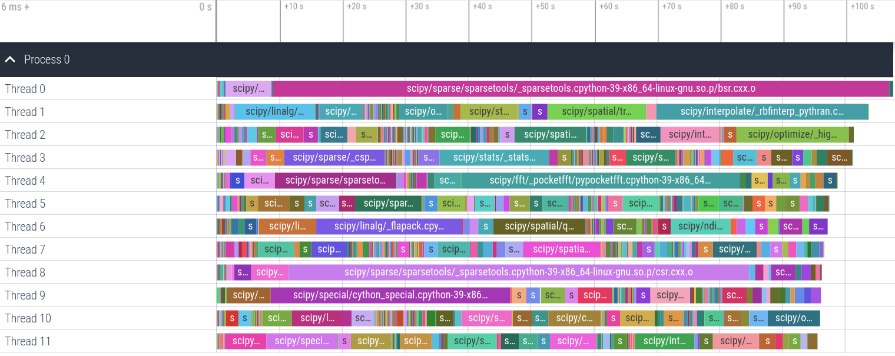
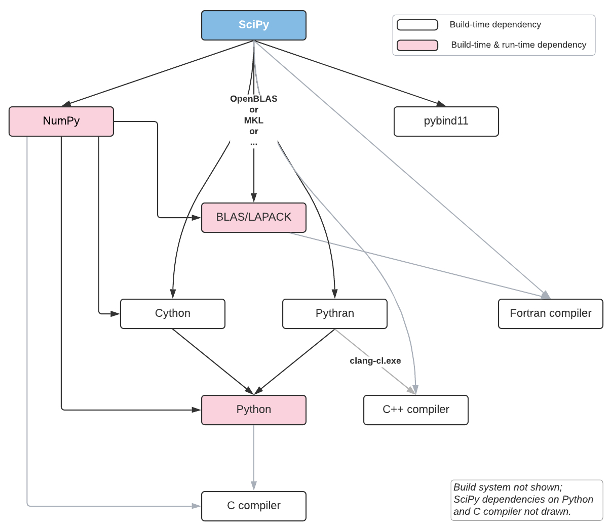

Moving SciPy to the Meson build system
Let's start with an announcement: SciPy now builds with Meson on Linux, and the full test suite passes!
This is a pretty exciting milestone, and good news for SciPy maintainers and contributors - they can look forward to much faster builds and a more pleasant development experience. So how fast is it? Currently the build takes about 1min 50s (a ~4x improvement) on my 3 year old 12-core Intel CPU (i9-7920X @ 2.90GHz):

Profiling result of a parallel build (12 jobs) of SciPy with Meson. Visualization created with ninjatracing and Perfetto.
As you can see from the tracing results, building a single C++ file
(bsr.cxx, which is one of SciPy's sparse matrix formats) takes over 90
seconds. So the 1min 50 sec build time is close to optimal - the only ways to improve it are major surgery on that C++ code, or buying a faster CPU.
Why move to Meson, and why now?
In Python 3.10 distutils will be deprecated and in Python 3.12 it will be
removed (see PEP 632). SciPy
uses numpy.distutils and setuptools as its build system, so the removal
of distutils from the Python standard library would have a major impact on
SciPy - and even more on numpy.distutils, which directly extends
distutils. That PEP was written almost a year ago, and at the time my first
instinct was to wait until setuptools integrated distutils (which the
setuptools maintainers still plan to do, with a cleaned up API) and then
update numpy.distutils for that change. That would also require moving
parts of numpy.distutils into setuptools, like Fortran support (see
setuptools/issues/2372 for
more details). It has become clear though that this will be a really slow and
painful process - after almost a year, the vendored distutils still hasn't
been re-enabled inside setuptools.
The other driver was that SciPy development has become more painful over
time. SciPy contains C, C++, Fortran and Cython code, exports C and Cython
APIs, has complex dependencies (see diagram below) and does a lot of code
generation. The growing amount of C++ and Cython code has increased build
times. CI systems frequently time out because build plus test suite run takes
close to 60 minutes (the limit on several free-for-open-source CI offerings).
Working on compiled code is cumbersome and slow, to the point where a couple
of other maintainers have told me it's a blocker for them to work on new
features. Finally, debugging build issues is quite difficult - distutils
doesn't really have a design, so every other extension just monkey patches
things as needed. Earlier in the year I spent half a day hunting a build
problem through four (!) different projects that all modified how extensions
are built.
Those things together made me realize that it's time to move to a better
build system - if we are forced to do a lot of work because of PEP 632
anyway, then now is the time. That left the question: which build system?
Really there were only two viable candidates: CMake and Meson. After some
experimentation, I had a strong preference for Meson for two main reasons: it
has great documentation (unlike CMake), and it's
easy to contribute to (it is ~25,000 lines of clean Python code, compared to
~1,000,000 lines of C/C++ for CMake). Given that there are very few Python
projects using either CMake or Meson, good docs and an easy to understand
code base are very important - we're going to have to contribute! CMake has a
larger user base, as well as better Python integration than Meson via
scikit-build right now. But to me
that was less important. Also, scikit-build still depends on setuptools and
one of the goals of this exercise is to get away from distutils/setuptools
completely and use only a modern build system and Python packaging standards
(i.e. pyproject.toml-based builds) to interact with pip and other Python
packaging tools.
So in February I wrote an RFC titled "switch to Meson as a build system", and after positive feedback started working on this project.

SciPy's external build and runtime dependencies. Vendored dependencies (e.g., SuperLU, ARPACK, large parts of Boost, Uarray, HiGHS, Qhull, PocketFFT, etc.) aren't shown.
Some of the benefits of building with Meson
Let's start with the biggest benefit: Meson is very fast.
$ time meson setup build
...
# Output: ~50 lines of useful configure info
real 0m3.765s
user 0m5.718s
sys 0m4.456s
$ time ninja -C build -j 12
...
# Output: ~25 lines of build output, only relevant compiler warnings
[1311/1311] Linking target scipy/sparse/sparsetools/_sparsetools.cpython-39-x86_64-linux-gnu.so
real 1m48.058s
user 19m58.007s
sys 2m4.746s
Compare this with the numpy.distutils based build:
$ export NPY_NUM_BUILD_JOBS=12 # parallelize over files for a single .so
$ time python setup.py build_ext --inplace -j 12 # parallelize .pyx -> .c/cxx
...
# Output: ~17,000 lines of build output, mostly noise.
# Relevant warnings are effectively impossible to spot.
real 6m56.364s
user 13m15.175s
sys 0m39.141s
So the Meson build is about 4x faster. The main reason numpy.distutils is
slow is that parallelism is limited - there are hard to fix race conditions
that prevent running build_ext completely in parallel. Another reason is
that it just goes around invoking compilers directly in a fairly ad-hoc
fashion, while Meson uses Ninja as a backend.
Ninja is about as fast as it gets.
What we can also see is that we now get a clean build log. This is part of
the reason it took a while to get to this point - every single compiler
warning was either silenced in the meson.build files or fixed in SciPy's
master branch.
Better debugging of build issues
One very nice improvement is that you don't actually have to run the build
anymore to figure out how an extension is built exactly. To look at compiler
flags, include paths, and other information relevant to how a target is
built, simple run meson introspect build/ -i --targets to obtain a JSON
representation like this:
{
"name": "_sparsetools.cpython-39-x86_64-linux-gnu",
"id": "c534037@@_sparsetools.cpython-39-x86_64-linux-gnu@sha",
"type": "shared module",
"defined_in": "/home/rgommers/code/bldscipy/scipy/sparse/sparsetools/meson.build",
"filename": [
"/home/rgommers/code/bldscipy/build/scipy/sparse/sparsetools/_sparsetools.cpython-39-x86_64-linux-gnu.so"
],
"build_by_default": true,
"target_sources": [
{
"language": "cpp",
"compiler": [
"/home/rgommers/anaconda3/envs/scipy-meson/bin/x86_64-conda-linux-gnu-c++"
],
"parameters": [
"-I/home/rgommers/code/bldscipy/build/scipy/sparse/sparsetools/_sparsetools.cpython-39-x86_64-linux-gnu.so.p",
"-I/home/rgommers/code/bldscipy/build/scipy/sparse/sparsetools",
"-I/home/rgommers/code/bldscipy/scipy/sparse/sparsetools",
"-I/home/rgommers/anaconda3/envs/scipy-meson/lib/python3.9/site-packages/numpy/core/include",
"-I/home/rgommers/anaconda3/envs/scipy-meson/include/python3.9",
"-fdiagnostics-color=always",
"-D_FILE_OFFSET_BITS=64",
"-Wall",
"-Winvalid-pch",
"-Wnon-virtual-dtor",
"-std=c++14",
"-O2",
"-g",
"-fvisibility-inlines-hidden",
"-std=c++17",
"-fmessage-length=0",
"-march=nocona",
"-mtune=haswell",
"-ftree-vectorize",
"-fPIC",
"-fstack-protector-strong",
"-fno-plt",
"-O2",
"-ffunction-sections",
"-pipe",
"-isystem",
"/home/rgommers/anaconda3/envs/scipy-meson/include",
"-DNDEBUG",
"-D_FORTIFY_SOURCE=2",
"-O2",
"-isystem",
"/home/rgommers/anaconda3/envs/scipy-meson/include",
"-fPIC",
"-DNPY_NO_DEPRECATED_API=NPY_1_9_API_VERSION"
],
"sources": [
"/home/rgommers/code/bldscipy/scipy/sparse/sparsetools/bsr.cxx",
"/home/rgommers/code/bldscipy/scipy/sparse/sparsetools/csc.cxx",
"/home/rgommers/code/bldscipy/scipy/sparse/sparsetools/csr.cxx",
"/home/rgommers/code/bldscipy/scipy/sparse/sparsetools/other.cxx",
"/home/rgommers/code/bldscipy/scipy/sparse/sparsetools/sparsetools.cxx"
],
"generated_sources": []
}
],
"extra_files": [],
"subproject": null,
"installed": true,
"install_filename": [
"/usr/local/lib/python3.9/site-packages/scipy/sparse/_sparsetools.cpython-39-x86_64-linux-gnu.so"
]
}
This helps quickly pinpointing mistakes in your meson.build files. In
addition, debugging potential issues in Meson itself, the generated
ninja.build file is fairly readable too - its syntax is simple enough that
missing dependencies can be found easily (e.g., scipy.cluster extensions
depend on scipy.linalg.cython_linalg, and that dependency must be declared
correctly).
Other benefits
Other significant benefits include:
- Cross-compiling will become possible. For years we've told people "sorry,
distutilswasn't really made for cross-compiling, let us know if you have any luck". As a result we've completely ignored users on some exotic platforms, and also spent a lot of time fighting with different CI systems to do native builds. For example, we will likely want to cross-compile toaarch64rather than struggle with underpowered ARM hardware on Travis CI. - Developers can use multiple builds at the same time. Because Meson builds are out-of-tree by design, it is now easy to have for example a GCC build, a Clang build, and a Python debug build in parallel in the same repo.
- More development tools work out of the box, e.g.
ccachewill just be picked up if it's installed, no configuration needed. I also managed to get AddressSanitizer to work with only a few small tweaks. - Build definitions are easier to understand and modify. Not everything is easier, but common tasks like setting a compiler flag depending on some condition (like "the compiler supports this flag") certainly are:
# meson.build
thread_dep = dependency('threads', required : false)
if thread_dep.found()
pocketfft_threads = '-DPOCKETFFT_PTHREADS'
endif
py3.extension_module('pypocketfft',
'pypocketfft.cxx',
cpp_args: pocketfft_threads,
include_directories: inc_pybind11,
dependencies: [py3_dep, thread_dep],
gnu_symbol_visibility: 'hidden',
install: true,
subdir: 'scipy/fft/_pocketfft',
)
compared with:
# setup.py
def pre_build_hook(build_ext, ext):
from scipy._build_utils.compiler_helper import (
set_cxx_flags_hook, try_add_flag, try_compile, has_flag)
cc = build_ext._cxx_compiler
args = ext.extra_compile_args
set_cxx_flags_hook(build_ext, ext)
if cc.compiler_type == 'msvc':
args.append('/EHsc')
else:
# Use pthreads if available
has_pthreads = try_compile(cc, code='#include <pthread.h>\n'
'int main(int argc, char **argv) {}')
if has_pthreads:
ext.define_macros.append(('POCKETFFT_PTHREADS', None))
if has_flag(cc, '-pthread'):
args.append('-pthread')
ext.extra_link_args.append('-pthread')
else:
raise RuntimeError("Build failed: System has pthreads header "
"but could not compile with -pthread option")
# Don't export library symbols
try_add_flag(args, cc, '-fvisibility=hidden')
def configuration(parent_package='', top_path=None):
...
config = Configuration('_pocketfft', parent_package, top_path)
ext = config.add_extension('pypocketfft',
sources=['pypocketfft.cxx'],
depends=['pocketfft_hdronly.h'],
include_dirs=include_dirs,
language='c++')
ext._pre_build_hook = pre_build_hook
Some key Meson design principles
Meson is a well-designed build system, and both the docs and a number of talks by Meson devs on YouTube do a great job at explaining that design. So I won't try and give a full picture here. However, there are a few things that are particularly important and would have helped me to fully grasp when I started on this project. So let's have a look at those.
Builds must be out-of-tree. Meson will not allow building inside your existing
source tree - and that includes code generation. There are good reasons for
this, but when coming from distutils it may bite you. For example, if you
have a script to generate Cython .pyx and .pxd files (quite common in
SciPy), those files cannot be placed next to the template, they must go into
a build directory (the one we chose with meson setup <builddir>).
Meson is not Turing-complete, and not extensible via APIs. What this means is that if something is not supported in Meson itself, you cannot just write a bit of Python code to hack around the problem. Instead, you must add it in Meson itself. If that takes too long, just fork Meson and use your fork until your feature is merged upstream. This seems painful, but it guarantees that people don't just copy around changes from project to project and long-term maintainability deteriorates. Instead, the philosophy is to fix things once for all users.
All source files and targets must be listed explicitly. This means that if you build a single Python extension from 50 Fortran files, you must list all 50 files names. This is not really a problem in practice, but it can be a little verbose. Using a few helper snippets to generate file listings in IPython saves time:
>>> for f in sorted(os.listdir('.')):
... if f.endswith('.f'):
... print(f" '{f}',")
...
'dgamln.f',
'zabs.f',
...
Meson has an imperative DSL with immutable objects. The syntax of the DSL is
inspired by Python, and is easy to read. Objects - which can be dependencies,
generated files, built extensions, etc. - being immutable makes things easy
to debug, but in some cases it can restrict what you can do. For example,
this code for building all scipy.sparse.csgraph extensions is quite
elegant, but the foreach pattern will not work if the .pyx files are
generated. This is because they'd then be objects created by custom_target,
and there is no syntax to give them unique names within the foreach loop -
this cost me some time to figure out:
pyx_files = [
['_flow', '_flow.pyx'],
['_matching', '_matching.pyx'],
['_min_spanning_tree', '_min_spanning_tree.pyx'],
['_reordering', '_reordering.pyx'],
['_shortest_path', '_shortest_path.pyx'],
['_tools', '_tools.pyx'],
['_traversal', '_traversal.pyx'],
]
foreach pyx_file : pyx_files
py3.extension_module(pyx_file[0],
pyx_file[1],
include_directories : inc_np,
dependencies : py3_dep,
install : true,
subdir : 'scipy/sparse/csgraph')
endforeach
Meson uses pkg-config for discovering dependencies. This means certain
things "just work". E.g., blas = dependency('openblas') followed by using
dependencies: blas to build the scipy.linalg._fblas extension worked on
the first try for me - definitely did not expect that.
There is one escape hatch to do things Meson does not natively support: custom_target.
As long you list its source files and outputs, you can invoke Python scripts
through custom_target. This is how the SciPy build invokes numpy.f2py,
Pythran and cython --cplus (Meson's Cython support is brand new, and only
supports targeting C if you give a .pyx file to py3.extension_module
right now).
The sharp bits
Not everything was smooth sailing. Here are a few of the most important issues I ran into:
- Cython + generated sources. This was by far the most time-consuming topic.
Cython's
cimportmechanism relies on the complete source tree. For example, not having a__init__.pyfile two directories up from where the.pyxfile that you are building lives changes the C code that Cython generates. The full source tree layout matters for Cython. Cython was largely designed around in-tree builds, and Meson only allows you to generate files out-of-tree. This necessitates hacks like writing scripts or invokingcpto copy over many__init__.pyand.pxi|.pxdfiles. And then more hacks to ensure those files are respected as dependencies by Ninja. - SciPy is a tangled mess - there are 17
scipy.xxxsubmodules and almost all of them depend on each other. So we could only start running tests after the Meson build was close to 100% complete. We have had issues in SciPy with import cycles before, and I'm now surprised we didn't have more issues in the past. - One feature I missed in Meson: installing generated files with
py3.install_sourcesis not allowed. One can specifyinstall: trueincustom_target, but it is a bit hacky to make that recognize the correct Python-specific install directory and it's then not possible to generate say 10 files and only install two of those (I ran into this multiple times, typically with Cython again where we need the.pyxand.pxifiles at build time, and the.pxdfiles also at runtime). - You must use
--prefixwhen usingmeson setup. If you don't, Meson just ignores with which Python interpreter you built and simply installs to the default/usr/local/lib/, asking for elevated permissions if needed. Meson doesn't know it's building a Python package (we've just told it in theprojectdefinition that we're building C, C++, Cython and Fortran code) so from the Meson perspective this is normal. It's not a major issue, however I have forgotten to add--prefix=$PWD/installdiroften enough that it's a point of friction. The plan is to solve this by writing adev.pyCLI wrapper, similar to SciPy'sruntests.py.
Next steps for SciPy and beyond
Right now the Meson support lives in my fork of SciPy. If you'd like to play with it, see rgommers/scipy/MESON_BUILD.md. There's a lot left to do before we can declary victory and make Meson the default build system. The most important topics are:
- support for macOS (should be easy) and Windows (probably tricky),
- implementing support for MKL and other BLAS/LAPACK libraries in Meson,
- making the BLAS/LAPACK library to use user-configurable, and
- building wheels and sdists.
For more details, see the tracking issue and my proposal on the scipy-dev list to use some SciPy project funds to help accelerate build and CI improvements.
When I started this endeavour, I wasn't yet completely sure using Meson was
going to work out. However I did know that if building SciPy was successful,
Meson will work for pretty much any other scientific Python project. We have
about two years left before distutils disappears, and my hope is that we
can retire numpy.distutils over that time frame. Projects which don't have
complex build requirements (i.e. just Cython, or maybe a few C extensions)
should be fine to simply use setuptools. And those projects which do have
complex builds can move to Meson, or to scikit-build if they prefer CMake.
There are a lot of technical reasons to argue for or against using any build
system. However, why I'm convinced Meson is a great choice for both SciPy and
other projects is: Meson is a pleasure to use. It "feels right". That's a
rare thing to say about a build system - I've certainly not heard anyone say
this about numpy.distutils or setuptools. Nor about CMake. We have had
two other alternative build systems before in NumPy and SciPy: first NumScons
(based on Scons) and then Bento (based on Waf). Both were created by David
Cournapeau; NumScons in 2008 and Bento in 2011.
Bento/Waf was most similar to Meson, and it made working on SciPy so much
better that I maintained it until 2018 - but it never made the transition to
Python 3. Yes, I stayed with Python 2.7 until 2018 specifically so I could
use Bento rather than distutils - nothing in Python 3.x was interesting
enough that it was worth dealing with distutils on a daily basis.
Unfortunately Waf was not a stable enough project to build on, and Bento was
a one-person project. Meson is even better than Waf and is well-maintained,
so we can finally have a single nice build system.
This project has consumed a lot of nights and weekends to get it to this
point. I wouldn't have gotten this far in five months without some very
important contributions though. Dylan Baker,
one of the Meson maintainers, implemented Cython support in Meson
impressively quickly after my "Treating Cython like a
language?" proposal. That
was a real life saver - using custom_target for every Cython extension
would have been very tedious. My colleague Gagandeep
Singh added Meson support for some of the
largest SciPy modules (optimize, stats, spatial, interpolate,
sparse.linalg). Smit Lunagariya, who
started an internship with SciPy earlier this month, added support for the
signal and misc submodules, and is fixing build warnings and bugs in
SciPy that the Meson build made visible. Jussi
Pakkanen (the Meson project leader), offered
encouraging advice early on. Thibault
Saunier implemented preliminary support for
PEP 621 in mesonpep517. Frederik Rietdijk sent
me a PR to demonstrate building SciPy with Meson and Nix. And many fellow
SciPy maintainers and others gave positive feedback on my proposals to try
adopting Meson. In short, it takes a village to switch build systems - thanks
to everyone who is participating in this effort!